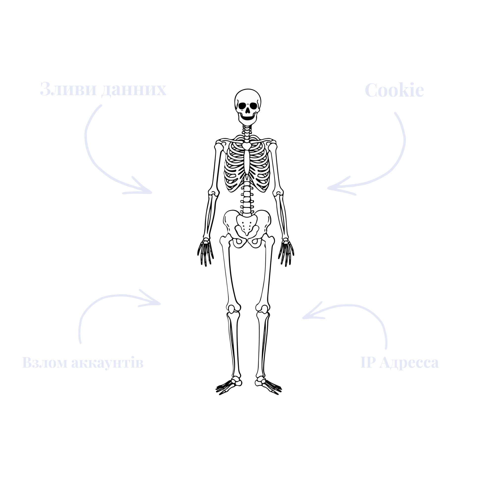
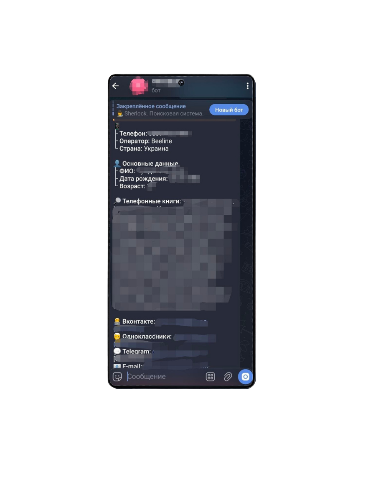
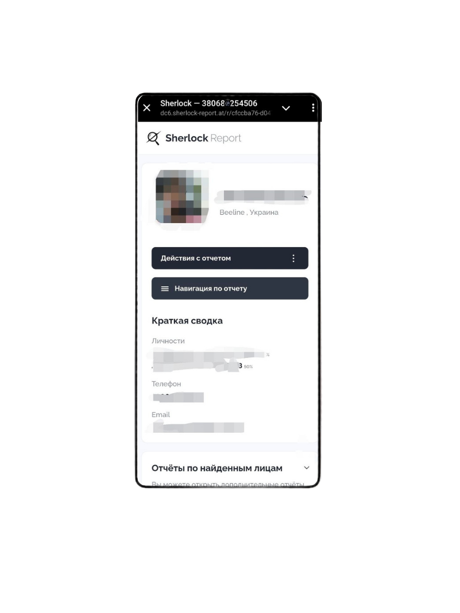

CyberSword
Osnit розслідування
У сучасний вік, користуючись гаджетами, ти неминуче формуєш цифровий відбиток, який потім дуже легко деанонімізувати. Це розслідування про те, як легко відстежити людину в інтернеті, як перестрахуватися та видалити особисту інформацію з відкритих джерел
Анатомія інформації яку про вас збирають. Коли ви відвідуєте сайти, вони зберігають інформацію про вас. Наприклад, файли cookie дозволяють системі «пам’ятати», що ви вже авторизовані або які товари переглядали. Це зручно, але саме так створюється ваш перший цифровий слід.
Миттєве стеження. Щойно ви заходите на підозрілий ресурс, він автоматично дізнається вашу локацію та модель пристрою. Якщо ж випадково надати доступ до камери чи мікрофона, сайт може розпочати прихований запис вашого оточення.

Як же Кіберзлочинці знаходять інформацію?Усе просто. Регулярно стаються витоки даних із різних популярних сервісів: від служб доставки до онлайн-магазинів. Коли база даних потрапляє в мережу, ваша пошта, номер телефону та паролі стають доступними кожному.
Реальність витоків.Якщо вам більше 20 років, ваші дані, ймовірно, вже є в мережі. Бази даних різних установ — від банківських до державних сервісів — часто стають доступними через зливи інформації або помилки безпеки. Сьогодні знайти чийсь номер телефону, адресу чи навіть паспортні дані в Telegram-ботах можна за кілька кліків. Скрольте униз для прикладу

Зараз ми бачимо на прикладі популярного OSNIT Телеграм-Бота наскільки легко знаходиться інформація

